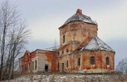
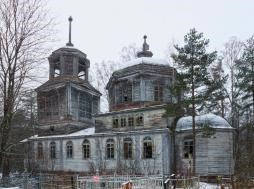
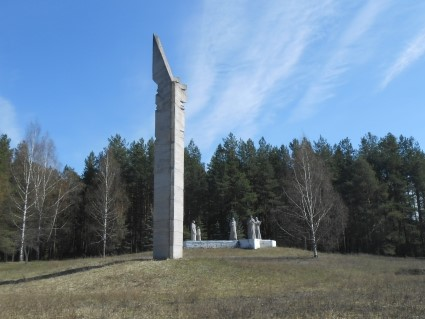
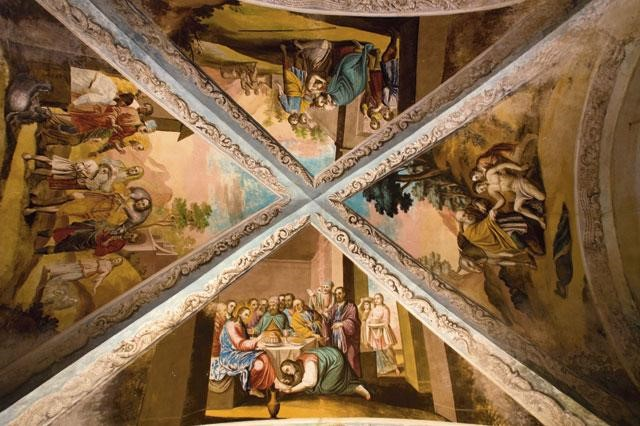
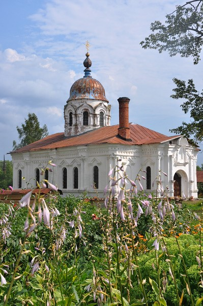
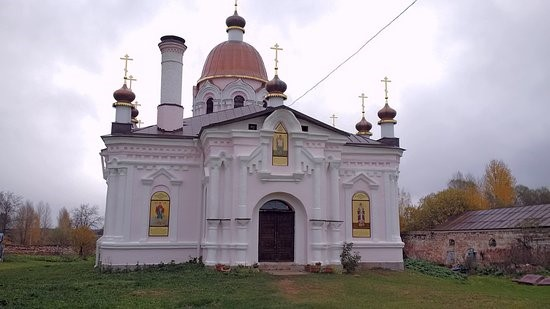
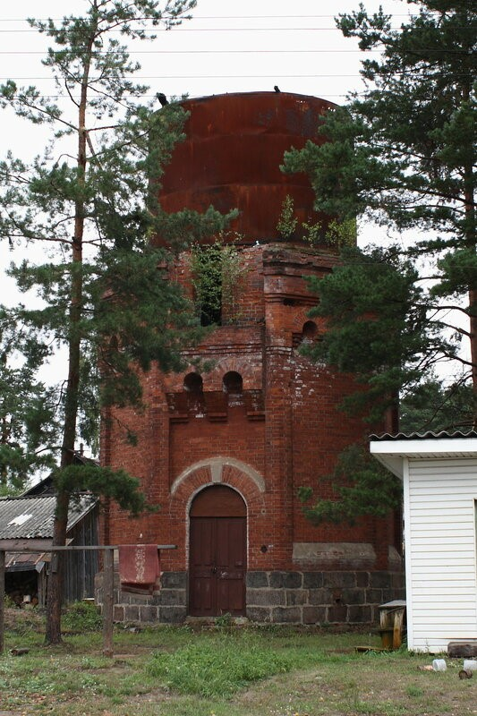

Максатиха
Культура
Церковь иконы Божией Матери «Всех скорбящих Радость» (Трестна)
Каменный храм в селе Трестна Максатихинского районаТверской области построен в 1802 годувека. Частично разрушен, восстанавливается силами местных жителей.
Церковь Троицы Живоначальной (Скирки)
Церковь Троицы Живоначальной – деревянный храм в деревне Скирки Тверской области, построен в 1864 г. Дата завершения строительства храма указана на внутренней стороне юго-западной стены верхнего яруса колокольни. Ныне церковь находится в ветхом состоянии, не действует.
Монумент «Обелиск Славы»
Монумент «Обелиск Славы», посвященный жителям Максатихи, павшим в годы Великой Отечественной войны был открыт 24 октября 1980 года. Мемориальная композиция примыкает к братскому кладбищу, находящемуся при въезде в Максатиху.
Николо-Теребенский женский монастырь

Монастырь основан в 1492, на территории есть подземная церковь Александра Свирского (Фактически под землей существовал еще один монастырь, о котором почти ничего не известно. Есть предположение, что в штольнях есть три саркофага. По преданию, еще в 1492 году помещик Михаил Обутков решил построить церковь во имя святителя Николая. Он заложил в Теребенях основание будущего храма, поставив там образ Николая Чудотворца. Однако эта икона чудесным образом несколько раз переносилась в другое место. В конце концов это убедило помещика построить храм в том месте, куда переносилась икона. Так и началась история монастыря. Николо-Теребенский монастырь был очень богатым. Считается, что Николаевская Теребенская обитель – третья по значению в мире из тех, что были построены в честь Николая Чудотворца. При монастыре была духовная семинария, сюда приезжал Николай II, на клиросе в Никольском соборе пел Федор Шаляпин, а к написанию удивительной красоты фресок на библейские мотивы причастен знаменитый художник Васнецов. Позднее, при советской власти здесь было хранилище ядохимикатов, затем - склад готовой продукции и спортзал. Удивительность монастыря – в самовосстанавливающихся фресках. Многие годы фрески не реставрировались. Местами осыпалась штукатурка, обнажив кладку. Однако те фрески, которые ранее были почти невидимы – уже несколько лет изо дня в день становятся ярче, отчетливее, как будто их только нанесли красками на стены.
На территории монастыря находится несколько храмов.
Никольская церковь
Церковь Благовещения Пресвятой Богородицы
Этот храм основан в 1882 году. Теперь в нем помещалась библиотека монастыря, насчитывающая сотни томов различных художественных и богословских книг.
Железнодорожная водокачка
Железнодорожная водонапорная башня, построенная в 1860 году. Деревянной части не сохранилось.